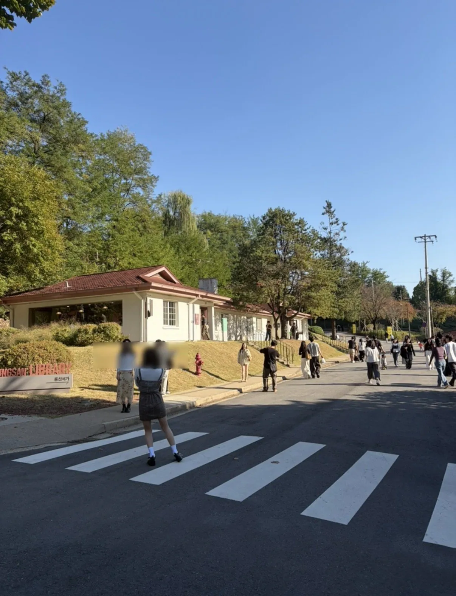
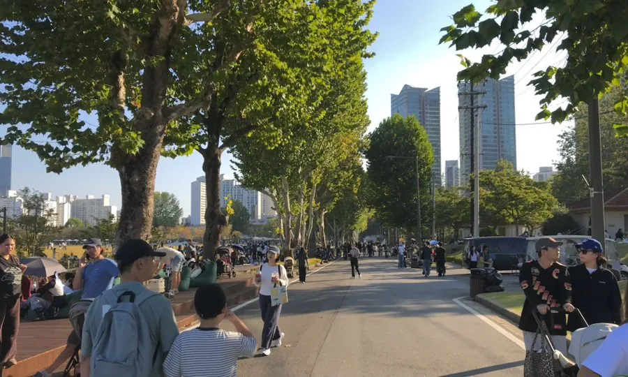
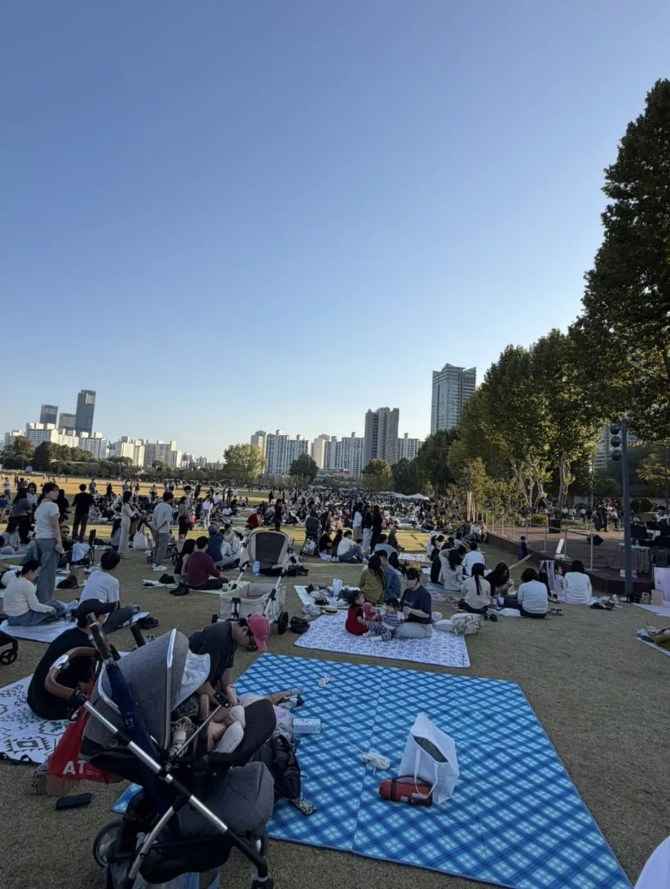
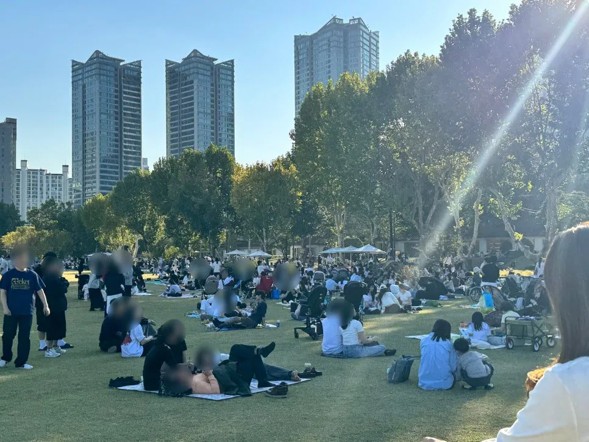

요샌 용산어린이정원, 장교숙소가 더 힙하다.
밀거면 올림픽공원, 서울숲을 밀어라.
여기뭐 땅 오염 ㅈㄴ심하다하지않음???
저걸 밀어야하는거면
쉬발 여수는 이미ㅋㅋㅋㅋㅋㅋㅋ
오염으로 잠시만 머물러도 안되느니 출입제한을 두느니 하더니
임대아파트 지어서 사람 사는건 또 괜찮다는게 코미디지 진짜ㅋㅋㅋㅋ
ㄹㅇㅋㅋ 어느 장단에 춤추라는거임 ㅋㅋ
여기 개좋다. 임대밭 되기 전에 어서 가봐라~
여기 밀어서 임대아파트 짓는다고 서울 인구 과밀화가 해결되는것도 아니고 그냥 냅두고 공원 만드는게 맞다고 생각되는데
또 오염 되었다는 말 많은데 거기다가 짓고 뭔 병생기면 보상해달라고 떼 쓸거 같음 걍 공원 만들고 비워두는게 맞음
상암에도 저런곳 있는데 텐트 치고 애기들 뛰놀게 하고 좋음
공원 아니고 공원 옆에 관사 부지에 짓는거 아님?
표빨아보겠다고 전세대출 남용해서 전세사기터트리더니.부동산 정책은 참 일관된단말야 ㅋㅋ
공원을 더 늘리지는 못할 망정
난 서울에 공원 다 없애버리면 좋겠어.
한강변까지 다 아파트 짓고 한강으로 내려가고 싶으면 해당 아파트 통해서만 출입가능하고, 공원 싹 밀어버리고 상가와 아파트, 그리고 지식산업 센터만 있는 '기업공장'이 되면 좋겠어.
그렇게 되면 자연스럽게 집값도 떨어지고 (공급확대 및 수요하락) , 기업은 사람이 넘쳐나니 인재확보도 쉽고., 인간다운 삶을 원하는 삶을 원하는 사람은 외곽으로 빠져나가는 선순환(?)이 이루어 지지 않을까?
이런걸 가속주의라고 해요
ㄹㅇ 그만큼 정신병동도 많이 생기고 사람들 운동 산책 공간 적어져서 만성질환도 증가해서 건보재정도 빨리 고갈되고 개좋을듯
건보재정은 서울 부동산 거래로 나오는 지방세로 퉁칠수 있을지도? 부동산 가격이 비싸니까 지방세 넘쳐나겠지.
스스로 닭장을 짓는 건가 ㅋㅋ
공원을 놔두든 늘리든, 다른 용도로 사용하든
장기적인 시단위, 구 단위 계획을 바탕으로 설계했으면 좋겠음
당장 집 부족하다고 밀고 아파트 짓자는 접근이 아니라..
오랜 세월 유지 될 장기전망 검토 결과 저 위치에 아파트가 필요하다는 결과가 나온거라면 그렇게 하는게 맞겠지만
그냥 남산도 깎고 관악산도 깎고 거기서 나온 바위로 한강도 메우고 서울시내를 온통 용적률 900넘는 아파트로 꽉꽉 채웠으면 좋겠다. 서울 공급 무새들 다 거기 살면서 아침에 9호선 급행같은 콩나물 시루 지하철 타고 출근하고 퇴근시간엔 개씹 밀리는 올림픽대로 반포대교 남단에서 고통받았으면 좋겠음
저기에 건물 세워야 한다는 댓글이 있는데 사람은 자연과 함께 끼고 생활해야 가장 건강하게 지낼 수 있음. 국토의 60퍼센트 정도가 산림이라서 좀 밀어도 상관없다는 말이 많던데 이게 20퍼든 10퍼든 사람이 가까이 끼고 있어야 의미가 있는거지 자신이 살지도 않는 먼 곳에 산이 있는건 사실상 의미가 없음. 못생긴 건물 제발 그만 세우고 유럽처럼 나무도 심고 마음좀 정화시킬 수 있는 자연친화적인 공원도 만들어야 하는데
서울 중심부에 타이어공장 리사이클링공장 산업폐기물공장 이런걸 왕창지어야함
그래도 사는지 아님 집값이 잡히는지
종종 가는데 그렇게 많지는 않음 ㅋㅋ 그냥 아파트 올리는 게 나음 ㅋㅋ